Contents
% LAB 3 - MSIM % Autor: Bernardo Rocha & Vasco Araújo % Número de Aluno: 89867 & 90817 % Maio 2020; Última Revisão: 13/05/2020
Exercício 5
clear close all clc %inicialização de variaveis g = 9.8; k = 3; L = 0.5; M = 0.15; l = 0.4; m = 0.2; beta = 0.1; J = m*l^2+(M*L^2)/3; %condiçoes iniciais teta0 = 0; d_teta0 = pi/4; stop_time = 10; sim5 = sim('system5'); figure(1) plot(sim5.tout, sim5.teta); grid on; xlabel('Tempo [s]'); ylabel('teta(t)'); title('Evolução do ângulo de teta(t)'); figure(2) plot(sim5.tout, sim5.d_teta); grid on; xlabel('Tempo [s]'); ylabel('d teta(t)'); title('Evolução da velocidade de teta(t)'); figure(3) plot(sim5.teta, sim5.d_teta); xlabel('teta(t)'); ylabel('d teta(t)'); title('Traçado de fase');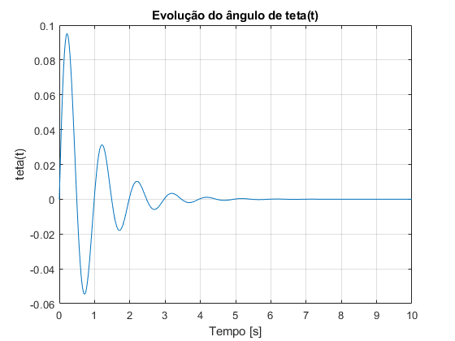 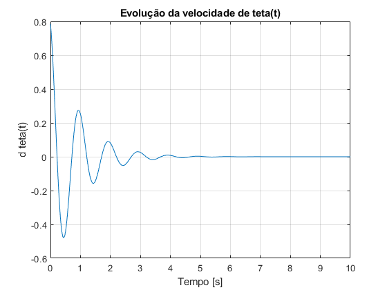

Modelo SIMULINK 5
system5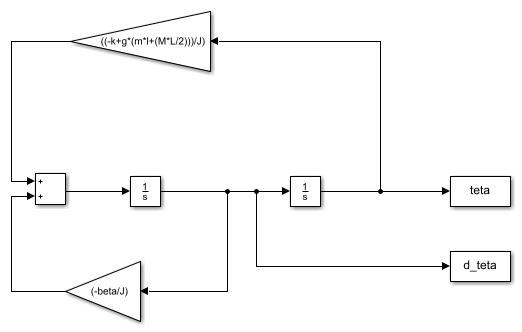
Exercício 6
clear close all clc %inicialização de variaveis g = 9.8; k = 3; L = 0.5; M = 0.15; l = 0.4; m = 0.2; beta = 0.1; J = m*l^2+(M*L^2)/3; stop_time = 10; %definir as matrizes de estado A = [ 0 1 ; ((-k+g*(m*l+(M*L/2)))/J) (-beta/J) ]; B = [ 0 ; 1/J ]; C = [ 1 0 ; 0 1 ]; D = [ 0 ; 0 ]; x0 = [ 0 ; pi/4 ]; % condiçoes iniciais T = [ 0 0 ]; sim6 = sim('system6'); figure(1) plot(sim6.tout, sim6.y(:,1)); grid on; xlabel('Tempo [s]'); ylabel('teta(t)'); title('Evolução do ângulo de teta(t)'); figure(2) plot(sim6.tout, sim6.y(:,2)); grid on; xlabel('Tempo [s]'); ylabel('d teta(t)'); title('Evolução da velocidade de teta(t)'); figure(3) plot(sim6.y(:,1), sim6.y(:,2)); xlabel('teta(t)'); ylabel('d teta(t)'); title('Traçado de fase');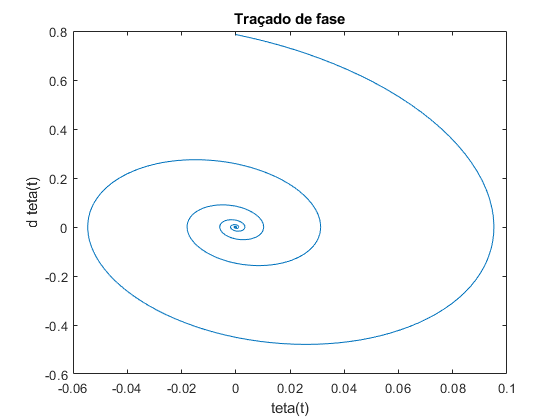
Teoricamente obtem-se que a matriz C é dada por C = [ 1 0 ], uma vez que se tem y = C x. No entanto, para efeitos de simulação a matriz C tem de ser 2x2 devido ao bloco State-Space do SIMULINK, o que até acaba por ser conveniente pois fazendo C = [ 1 0 ; 0 1 ] podemos observar o comportamento de 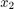, que neste caso representa a velocidade de 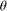(t) de forma a fazermos o traçado de fase do sistema.
Modelo SIMULINK 6
system6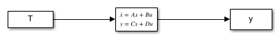
Exercício 7
clear close all clc %inicialização de variaveis g = 9.8; k = 3; L = 0.5; M = 0.15; l = 0.4; m = 0.2; J = m*l^2+(M*L^2)/3; stop_time = 10; %definir as matrizes de estado B = [ 0 ; 1/J ]; C = [ 1 0 ; 0 1 ]; D = [ 0 ; 0 ]; x0 = [ 0 ; pi/4 ]; % condiçoes iniciais T = [ 0 0 ]; for i=0:1:1 beta = i; A = [ 0 1 ; ((-k+g*(m*l+(M*L/2)))/J) (-beta/J) ]; sim7 = sim('system6'); figure(1) plot(sim7.tout, sim7.y(:,1)); grid on hold on figure(2) plot(sim7.tout, sim7.y(:,2)); grid on hold on figure(3) plot(sim7.y(:,1), sim7.y(:,2)); hold on end %%%%%%%%%%%%%%%%%%%%%%%%%%%%%%%%%%%%%%%% %respostas no plano de estado de diferentes condiçoes inicias for beta = 0:1:1 %recalcular matriz A A = [ 0 1 ; ((-k+g*(m*l+(M*L/2)))/J) (-beta/J) ]; for p = -5:2:5 %mudar condiçáo inicial x0 = [p p]; sim7_p = sim('system6'); if beta == 0 figure(4) else figure(5) end plot(sim7_p.y(:,1), sim7_p.y(:,2)); hold on grid on end %%%%%%%%%%%%%%%%%%%%%%%%%%%%%%%%%%%%%%%%% %faz o campo dos vectores (quiver) X = linspace(-max(abs(sim7_p.y(:,1)))-1, max(abs(sim7_p.y(:,1)))+1, 15); Y = linspace(-max(abs(sim7_p.y(:,2)))-1, max(abs(sim7_p.y(:,2)))+1, 15); for i = 1:size(X,2) for j = 1:size(Y,2) q = A*[X(i);Y(j)]; u(j,i) = q(1); v(j,i) = q(2); end end quiver(X, Y, u, v,0.7); %%%%%%%%%%%%%%%%%%%%%%%%%%%%%%%%%%%% %calculo dos valores e vetores proprios [vectors, values] = eig(A); fprintf('\n\nPara beta = %d:\n Vectores próprios:\n', beta); disp(vectors); fprintf('\n Valores próprios:\n'); disp(values); end %calcular valores e vetores proprios de A para o valor de beta da questao 5 beta = 0.1; A = [ 0 1 ; ((-k+g*(m*l+(M*L/2)))/J) (-beta/J) ]; [vectors, values] = eig(A); fprintf('\n\nPara beta = %.1f:\n Vectores próprios:\n', beta); disp(vectors); fprintf('\n Valores próprios:\n'); disp(values); %%%%%%%%%%%%%%%%%%%%%%%%%%%%%%%%%%%%%%%%% %graficos figure(1) xlabel('Tempo [s]'); ylabel('teta(t)'); title('Evolução do ângulo de teta(t)'); legend('beta = 0', 'beta = 1'); figure(2) xlabel('Tempo [s]'); ylabel('d teta(t)'); title('Evolução da velocidade de teta(t)'); legend('beta = 0', 'beta = 1'); figure(3) xlabel('teta(t)'); ylabel('d teta(t)'); title('Traçado de fase'); legend('beta = 0', 'beta = 1'); for r = 4:1:5 figure(r) xlabel('teta(t)'); ylabel('d teta(t)'); if r == 4 title('Traçado de fase com beta = 0'); elseif r == 5 title('Traçado de fase com beta = 1'); end leg = legend('(-5, -5)', '(-3, -3)', '(-1, -1)', '(1, 1)', '(3, 3)','(5, 5)'); title(leg, 'Pontos iniciais (teta,dteta)'); end
Para beta = 0:
Vectores próprios:
0.0000 - 0.1533i 0.0000 + 0.1533i
0.9882 + 0.0000i 0.9882 + 0.0000i
Valores próprios:
0.0000 + 6.4451i 0.0000 + 0.0000i
0.0000 + 0.0000i 0.0000 - 6.4451i
Para beta = 1:
Vectores próprios:
0.4415 -0.0489
-0.8973 0.9988
Valores próprios:
-2.0323 0
0 -20.4396
Para beta = 0.1:
Vectores próprios:
-0.0267 - 0.1510i -0.0267 + 0.1510i
0.9882 + 0.0000i 0.9882 + 0.0000i
Valores próprios:
-1.1236 + 6.3464i 0.0000 + 0.0000i
0.0000 + 0.0000i -1.1236 - 6.3464i
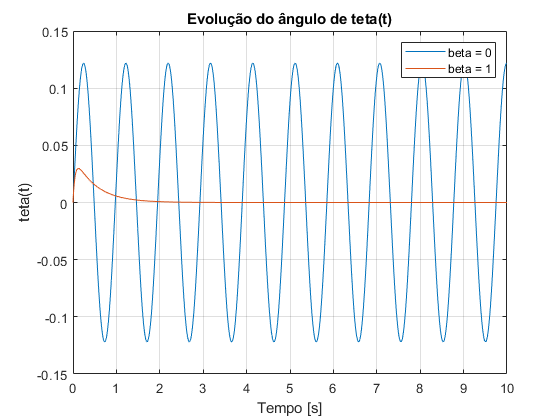 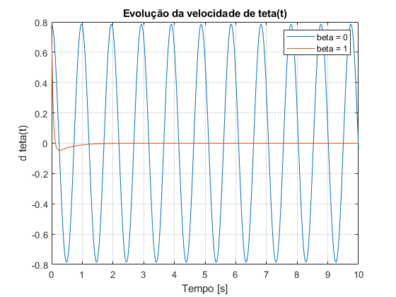  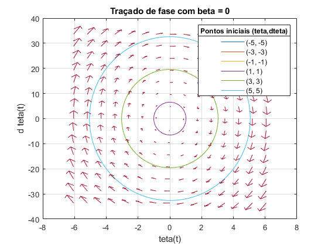 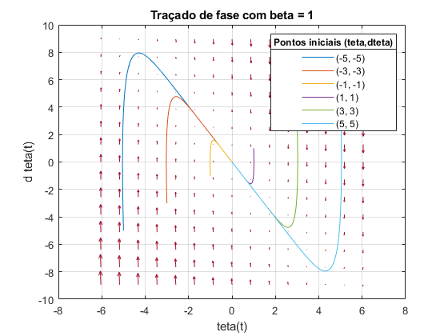
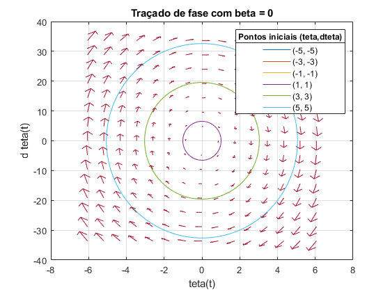 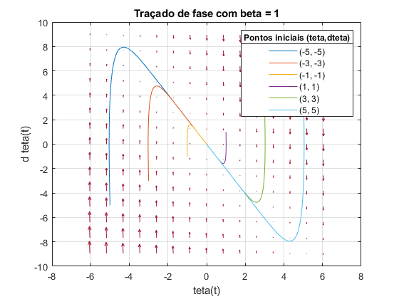 Para  = 0, o sistema não tem amortecimento, logo como se pode confirmar pela Figura 1, o ângulo oscila indefinidamente de forma constante sem perturbações, enquanto que para = 1 o sistema tem amortecimento total e portanto converge bastante rápido para 0. Para o caso de = 0 podemos verificar que obtemos no nosso plano de fase uma dinâmica do tipo "Centro", isto deve-se ao facto de os valores próprios serem imaginários puros. Intuitivamente, percebemos que o sistema sem qualquer tipo de atríto, permanecerá em oscilação indeterminadamente. Já no caso de = 1 os nossos valores prórpios são negativos, logo as nossas soluções irão tender para a origem, orientando-se e acompanhando os vectores próprios existentes. Fazendo novamente uma análise intuitiva, visto que existe uma força de atríto presente no sistema, a oscilação irá ser amortecida até se anular no limite do tempo.
= 0, o sistema não tem amortecimento, logo como se pode confirmar pela Figura 1, o ângulo oscila indefinidamente de forma constante sem perturbações, enquanto que para = 1 o sistema tem amortecimento total e portanto converge bastante rápido para 0. Para o caso de = 0 podemos verificar que obtemos no nosso plano de fase uma dinâmica do tipo "Centro", isto deve-se ao facto de os valores próprios serem imaginários puros. Intuitivamente, percebemos que o sistema sem qualquer tipo de atríto, permanecerá em oscilação indeterminadamente. Já no caso de = 1 os nossos valores prórpios são negativos, logo as nossas soluções irão tender para a origem, orientando-se e acompanhando os vectores próprios existentes. Fazendo novamente uma análise intuitiva, visto que existe uma força de atríto presente no sistema, a oscilação irá ser amortecida até se anular no limite do tempo.
Exercício 8
clear close all clc %inicialização de variaveis g = 9.8; k = 3; L = 0.5; M = 0.15; l = 0.4; m = 0.2; J = m*l^2+(M*L^2)/3; beta = 1; stop_time = 10; %definir as matrizes de estado A = [ 0 1 ; ((-k+g*(m*l+(M*L/2)))/J) (-beta/J) ]; B = [ 0 ; 1/J ]; C = [ 1 0 ; 0 1 ]; D = [ 0 ; 0 ]; T = [ 0 0 ]; %calculo das condiçoes iniciais [vectors, values] = eig(A); for i = 1:2 x0 = [vectors(1,i) vectors(2,i)]; sim8 = sim('system6'); figure(i) plot(sim8.y(:,1), sim8.y(:,2)); title("Traçado de fase com condições iniciais: x0 = [" + vectors(1,i) + " ; " + vectors(2,i) + "]"); xlabel('teta(t)'); ylabel('d teta(t)'); end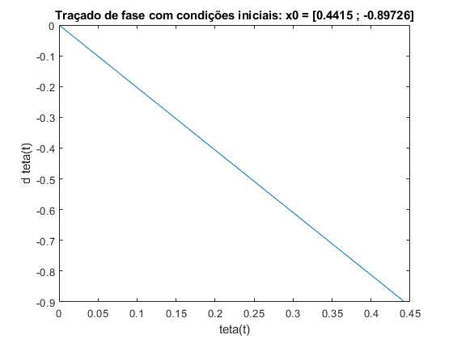 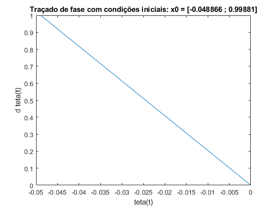
Exercício 9
clear close all clc %inicialização de variaveis g = 9.8; k = 0.35; L = 0.25; M = 0.1; beta = 0.001; m_lento = 0; l_lento = 0; m_allegro = 0; l_allegro = 0; %definir BPMs que queremos (grupo 36 -> X = 3; Y = 6) X = 3; Y = 6; BPM_lento = 50 + 2*(X+1); BPM_allegro = 150 - 2*(Y+2); %para fazermos o dimensionamento iremos correr o modelo para varios valores %de m e l até encontrarmos o q estiver mais proximo do pretendido m_array = linspace(0, M, 200); l_array = linspace(0.05, L, 200); %calcula o BPM para cada valor de m e l for i = 1:size(m_array,2) for j = 1:size(l_array,2) m = m_array(i); l = l_array(j); J = m*l^2+(M*L^2)/3; wn(i,j) = sqrt((k-g*(m*l+(M*L/2)))/J); epsilon(i,j) = (beta/(2*J*wn(i,j))); %frequencia do oscilador amortecido -> mais fiel q frequencia %natural wa(i,j) = wn(i,j)*sqrt(1-epsilon(i,j)^2); %para eliminar os valores complexos if ~isreal(wa(i,j)) wa(i,j) = NaN; end BPM_matrix(i,j) = wa(i,j)*60/pi; end end %encontra o primeiro valor de m que permite um BPM maior que o BPM_allegro e um BPM %menor que o BPM_lento for i = 1:size(m_array,2) m_dimensionamento_lento = 0; m_dimensionamento_allegro = 0; for j = 1:size(l_array,2) if BPM_matrix(i,j) >= BPM_allegro m_dimensionamento_allegro = 1; end if BPM_matrix(i,j) <= BPM_lento m_dimensionamento_lento = 1; end end if (m_dimensionamento_lento + m_dimensionamento_allegro) == 2 index_m_dimensionado = i; break; end end if m_dimensionamento_lento == 0 index_m_dimensionado = size(m_array,2); elseif m_dimensionamento_allegro == 0 index_m_dimensionado = 1; end [index_l_lento] = findClosest(BPM_matrix, BPM_lento, index_m_dimensionado, size(l_array,2)); [index_l_allegro] = findClosest(BPM_matrix, BPM_allegro, index_m_dimensionado, size(l_array,2)); m_lento = m_array(index_m_dimensionado); m_allegro = m_lento; l_lento = l_array(index_l_lento); l_allegro = l_array(index_l_allegro); %%%%%%%%%%%%%%% %plot do BPM figure(1) surfc(m_array, l_array, BPM_matrix); %%%%%%%%%%%%%%%%%%%%%%%%%%%%%%%%%%%%%%%%%%%%%%%%%%%%%%%%%%%%%%% %confirmar o dimensionamento acima for i = 1:2 if i == 1 m = m_lento; l = l_lento; elseif i == 2 m = m_allegro; l = l_allegro; end %recalcular matrizes e parametros necessarios para a simulaçao J = m*l^2+(M*L^2)/3; A = [ 0 1 ; ((-k+g*(m*l+(M*L/2)))/J) (-beta/J) ]; B = [ 0 ; 1/J ]; C = [ 1 0 ; 0 1 ]; D = [ 0 ; 0 ]; T = [ 0 0 ]; x0 = [ pi/4 0 ]; %condiçao inicial stop_time = 60; sim9 = sim('system6'); figure(i+1); plot(sim9.tout, sim9.y(:,1)); wn = sqrt((k-g*(m*l+(M*L/2)))/J); epsilon = (beta/(2*J*wn)); %faz plot da envolvente teorica hold on plot(sim9.tout, (pi/4)*exp(-epsilon*wn*sim9.tout), 'r'); plot(sim9.tout, -(pi/4)*exp(-epsilon*wn*sim9.tout), 'r'); %estimar BPM [peaks, locations] = findpeaks(sim9.y(:,1)); T_estimada = (sim9.tout(locations(numel(locations))) - sim9.tout(locations(1)))/(numel(locations)-1); f_estimada = 1/T_estimada; BPM_estimado(i) = 2*f_estimada*60; end %%%%%%%%%%%%%%%%%%%%%%%%%%%%%%%%%%%%%%%%%%%%%%%%%%%%%% %graficos figure(1); title('Variação de BPM para diferentes dimensionamentos de m e l'); xlabel('m'); ylabel('l'); zlabel('BPM'); shading interp; colorbar; figure(2); xlabel('Tempo [s]'); ylabel('teta(t)'); title("Evolução do ângulo de teta(t) (modelo linear) com: m = " + m_lento + " ; l = " + l_lento); legend("BPM real =" + BPM_estimado(1) + "; BPM teórico =" + BPM_lento, "Envolvente teórica"); grid on; figure(3); xlabel('Tempo [s]'); ylabel('teta(t)'); title("Evolução do ângulo de teta(t) (modelo linear) com: m = " + m_allegro + " ; l = " + l_allegro); legend("BPM real =" + BPM_estimado(2) + "; BPM teórico =" + BPM_allegro, "Envolvente teórica"); grid on;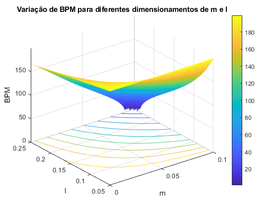 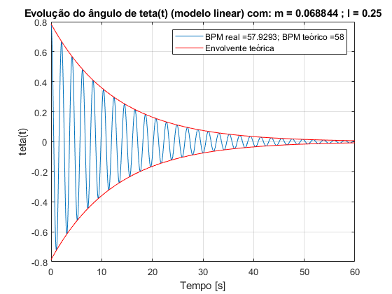 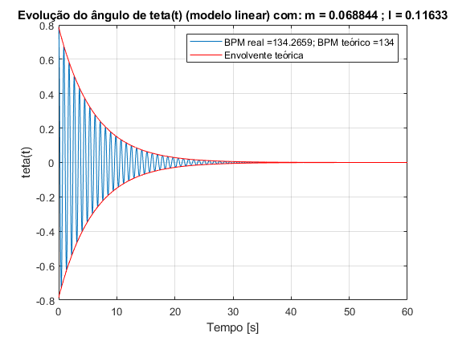
Como podemos verificar pelas Figuras 1 e 2, a evolução de (t) ao longo do tempo segue de forma bastante fiel a envolvente teórica, como seria de esperar pois a estimação do BPM está bastante perto do desejado para ambas as cadências, não se verificando nenhuma diferença de maior entre a estimação do BPM lento para o allegro.
Função findClosest
type('findClosest.m');
function [index_l] = findClosest(BPM_matrix, BPMtoFind, index_m, size)
oldDiference = abs(BPM_matrix(1,1) - BPMtoFind);
index_l = 1;
for j = 1:size
currentDiference = abs(BPM_matrix(index_m,j) - BPMtoFind);
if currentDiference < oldDiference
oldDiference = currentDiference;
index_l = j;
end
end
Exercício 10
clear all close all clc %inicialização de variaveis g = 9.8; L = 0.25; M = 0.1; k = 0.35; beta = 0.001; T = 0; %condiçoes iniciais teta0 = pi/4; d_teta0 = 0; %valores calculados em 9) m_lento = 0.068844; l_lento = 0.25; m_allegro = m_lento; l_allegro = 0.11633; %definir BPMs que queremos (grupo 36 -> X = 3; Y = 6) X = 3; Y = 6; BPM_lento = 50 + 2*(X+1); BPM_allegro = 150 - 2*(Y+2); %atribuir a m e l os valores dimensionados em 9) for i = 1:2 if i == 1 m = m_lento; l = l_lento; elseif i == 2 m = m_allegro; l = l_allegro; end J = (3*m*l^2+M*L^2)/3; stop_time = 60; sim10 = sim('system10'); figure(i) plot(sim10.tout, sim10.teta); hold on %estimar BPM [peaks, locations] = findpeaks(sim10.teta); T_estimada = (sim10.tout(locations(numel(locations))) - sim10.tout(locations(1)))/(numel(locations)-1); f_estimada = 1/T_estimada; BPM_estimado(i) = 2*f_estimada*60; %%%%%%%%%%%%%%%%%%%%%%%%%%%%%%%%%%%%%%%%%%%%%%%%%%%%%%%%% %queremos otimizar a posiçao da massa m (l) para aproximar BPM %do valor desejado l_array = linspace(l-0.001,l+0.001,20); for j = 1:size(l_array,2) l = l_array(j); J = (3*m*l^2+M*L^2)/3; stop_time = 60; sim10_testa_opti = sim('system10'); [peaks_testa_opti, locations_testa_opti] = findpeaks(sim10_testa_opti.teta); T_testa_opti = (sim10_testa_opti.tout(locations_testa_opti(numel(locations_testa_opti))) - sim10_testa_opti.tout(locations_testa_opti(1)))/(numel(locations_testa_opti)-1); f_testa_opti = 1/T_testa_opti; BPM_testa_opti(1,j) = 2*f_testa_opti*60; end %encontra o valor de BPM mais proximo do desejado if i == 1 l_index = findClosest(BPM_testa_opti, BPM_lento, 1, size(l_array,2)); elseif i == 2 l_index = findClosest(BPM_testa_opti, BPM_allegro, 1, size(l_array,2)); end l = l_array(l_index); %volta a correr a simulaçao J = (3*m*l^2+M*L^2)/3; stop_time = 60; sim10_otimizado = sim('system10'); figure(i) plot(sim10_otimizado.tout, sim10_otimizado.teta); %estimar BPM [peaks_otimizado, locations_otimizado] = findpeaks(sim10_otimizado.teta); T_estimada_otimizado = (sim10_otimizado.tout(locations_otimizado(numel(locations_otimizado))) - sim10_otimizado.tout(locations_otimizado(1)))/(numel(locations_otimizado)-1); f_estimada_otimizado = 1/T_estimada_otimizado; BPM_estimado_otimizado(i) = 2*f_estimada_otimizado*60; end %%%%%%%%%%%%%%%%%%%%%%%%%%%%%%%%%%%%%%%%%%%%%%%%%%%%%%%%%%%%% %graficos figure(1); xlabel('Tempo [s]'); ylabel('teta(t)'); title("Evolução do ângulo de teta(t) (modelo não linear) "); leg1 = legend("BPM real =" + BPM_estimado(1) , "BPM otimizado =" + BPM_estimado_otimizado(1)); title(leg1, "BPM teórico =" + BPM_lento); grid on; figure(2); xlabel('Tempo [s]'); ylabel('teta(t)'); title("Evolução do ângulo de teta(t) (modelo não linear)"); leg2 = legend("BPM real =" + BPM_estimado(2) , "BPM otimizado =" + BPM_estimado_otimizado(2)); title(leg2, "BPM teórico =" + BPM_allegro); grid on;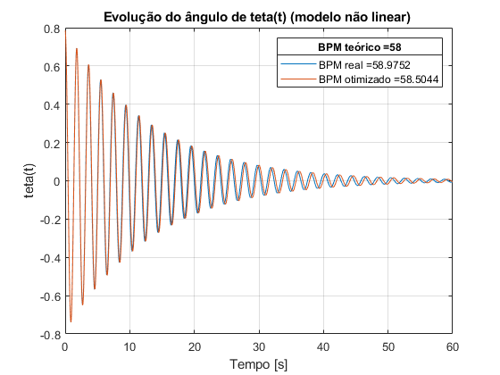 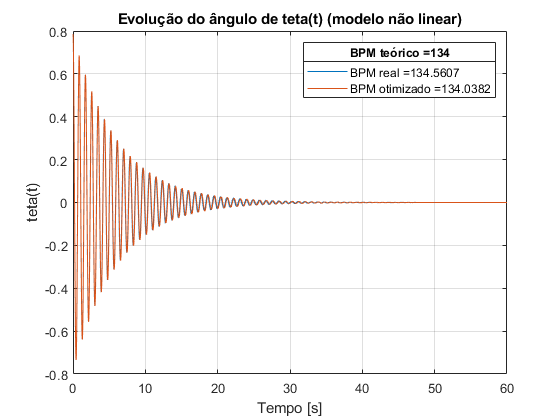
Como podemos verificar, ao usarmos o dimensionamento calculado em 9) para um modelo não linear do sistema verifica-se que a estimação de BPM afastou-se um pouco do valor teórico. De maneira a optimizarmos esta estimação, assumindo que a massa m é a mesma, iremos voltar a simular o modelo do sistema para um intervalo de valores na vizinhança do comprimento l calculado anteriormente e voltamos a proceder à mesma táctica do 9, isto é, calculamos o BPM real para todos os dimensionametos e calculamos qual o que tem menor distância do valor teórico, sendo esse o dimensionamento escolhido para a optimização.
Modelo SIMULINK 10
system10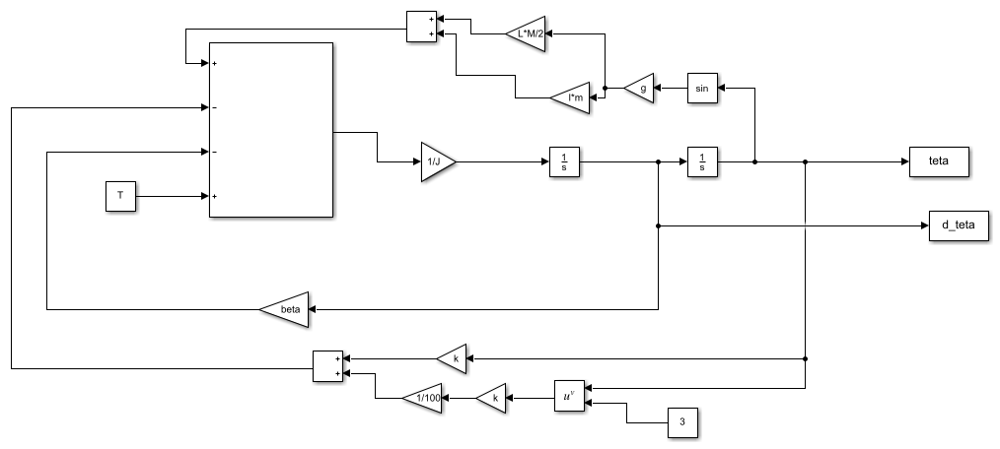
Exercício 11
clear close all clc %inicialização de variaveis g = 9.8; k = 0.35; L = 0.25; M = 0.1; beta = 0.001; %condiçoes iniciais teta0 = pi/4; d_teta0 = 0; %valores calculados em 9) m_lento = 0.068844; l_lento = 0.25; m_allegro = m_lento; l_allegro = 0.11633; %definir BPMs que queremos (grupo 36 -> X = 3; Y = 6) X = 3; Y = 6; BPM_lento = 50 + 2*(X+1); BPM_allegro = 150 - 2*(Y+2); T = 0.5; for i = 1:2 if i == 1 m = m_lento; l = l_lento; elseif i == 2 m = m_allegro; l = l_allegro; end J = (3*m*l^2+M*L^2)/3; stop_time = 60; sim11 = sim('system11'); figure(i) plot(sim11.tout, sim11.teta); hold on plot(sim11.tout, sim11.binario); %estimar BPM [peaks, locations] = findpeaks(sim11.teta); T_estimada = (sim11.tout(locations(numel(locations))) - sim11.tout(locations(1)))/(numel(locations)-1); f_estimada = 1/T_estimada; BPM_estimado(i) = 2*f_estimada*60; end %%%%%%%%%%%%%%%%%%%%%%%%%%%%%%%%%%%%%%%%%%%%%%%%%%%%% %graficos figure(1); xlabel('Tempo [s]'); ylabel('teta(t)'); leg = legend("Teta(t)", "Binário"); title(leg, "BPM real =" + BPM_estimado(1) + "; BPM teórico =" + BPM_lento); title("Evolução do ângulo teta(t) e do binário externo aplicado"); grid on; figure(2); xlabel('Tempo [s]'); ylabel('teta(t)'); leg = legend("Teta(t)", "Binário"); title(leg, "BPM real =" + BPM_estimado(2) + "; BPM teórico =" + BPM_allegro); title("Evolução do ângulo teta(t) e do binário externo aplicado"); grid on;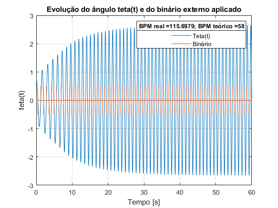 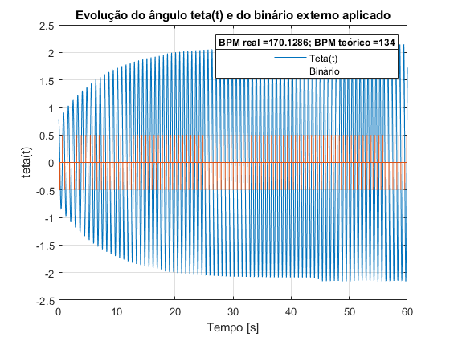
Como se pode verificar, a aplicação de um binário externo ao sistema afecta bastante a frequência de oscilação pretendida, mas no entanto verifica-se que consegue evitar o decaimento do sistema oscilatório e com isso obtém-se uma oscilação constante ao longo do tempo. Isto deve-se ao facto de estarmos a contrariar as forças de atrito e gravíticas do sistema que têm contribuições para o amortecimento da oscilação. Podemos concluir também que o nosso binário externo, caso seja maior do que o suposto, acaba por acelerar a oscilação do metrónomo, causando um aumento significativo na frequência de oscilação, desfasando-se do pretendido.
Modelo SIMULINK 11
system11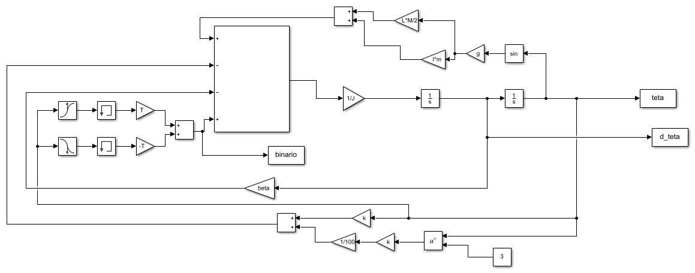
Exercício 12
clear close all clc %inicialização de variaveis g = 9.8; k = 0.35; L = 0.25; M = 0.1; beta = 0.001; %condiçoes iniciais teta0 = pi/4; d_teta0 = 0; %valores calculados em 9) m_lento = 0.068844; l_lento = 0.25; m_allegro = m_lento; l_allegro = 0.11633; %definir BPMs que queremos (grupo 36 -> X = 3; Y = 6) X = 3; Y = 6; BPM_lento = 50 + 2*(X+1); BPM_allegro = 150 - 2*(Y+2); T = 0.5; for i = 1:2 if i == 1 m = m_lento; l = l_lento; elseif i == 2 m = m_allegro; l = l_allegro; end J = m*l^2+(M*L^2)/3; wn = sqrt((k-g*(m*l+(M*L/2)))/J); epsilon = (beta/(2*J*wn)); G = 1/((wn^2)*J); Gs = G*tf(wn^2, [ 1 , (2*epsilon*wn) , wn^2 ] ); bode(Gs); hold on end figure(1) grid on legend("BPM lento", "BPM allegro");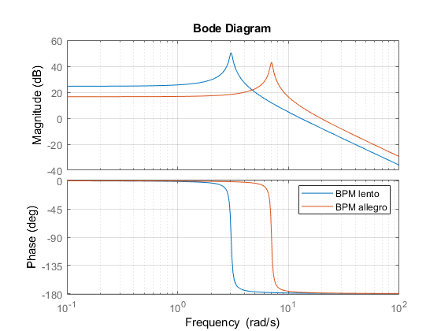
Como se pode verificar, para o BPM mais elevado o diagrama de bode está deslocado para a direita em relação ao BPM mais pequeno, o que é expectável pois o BPM varia linearmente com a frequência. Também se verifica que o ganho para o BPM allegro é inferior.
Exercício 13
clear close all clc %inicialização de variaveis g = 9.8; k = 0.35; L = 0.25; M = 0.1; beta = 0.001; m = 0.07; l = 0.12; J = m*l^2+(M*L^2)/3; wn_teorico = sqrt((k-g*(m*l+(M*L/2)))/J); T = 0.5; %definir as matrizes de estado A = [ 0 1 ; ((-k+g*(m*l+(M*L/2)))/J) (-beta/J) ]; B = [ 0 ; 1/J ]; C = [ 1 0 ; 0 1 ]; D = [ 0 ; 0 ]; x0 = [ 0 ; pi/4 ]; % condiçoes iniciais stop_time = 60; %cria um array de frequencias f_array = linspace(0, 10, 500); %cria um array com amplitudes a_array = zeros(1,size(f_array,2)); max_a = 0; max_a_index = 1; for i = 1:size(f_array,2) f = f_array(i); sim13 = sim('system13'); a_array(i) = mean(sim13.y(:,1)); if(a_array(i) > max_a) max_a = a_array(i); max_a_index = i; end end wn = 2*pi*f_array(max_a_index); m_estimado = (k-wn^2*(M*(L^2)/3)-(g*M*L/2))/((wn^2)*(l^2)+g*l); fprintf("\n m real = "); disp(m); fprintf("\n m estimado = "); disp(m_estimado); figure(1) plot(f_array, a_array); grid on; xlabel('Frequência [Hz]'); ylabel('Amplitude [V]');
m real = 0.0700 m estimado = 0.1932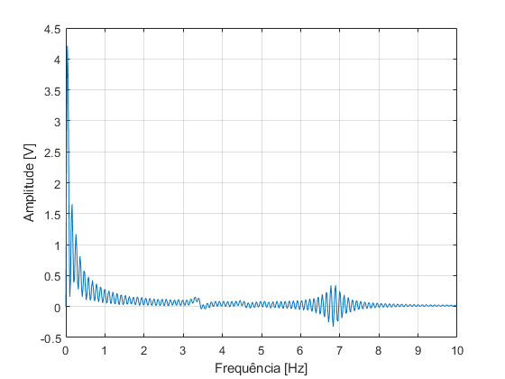
Como se pode confirmar pela questão 11, apesar de o mecanismo de relojoaria que aplica um binário externo resolver o problema do decaimento para zero do sistema, obtendo assim ondulações constantes, o que é o que se pretende quando se usa um metrónomo. Apesar disso, podemos verificar que a frequência de oscilação está bastante longe da pretendida, o que torna este mecanismo inútil para uma aplicação práctica pois se o metrónomo não consegue oscilar à frequência pretendida com um erro mínimo nao tem nenhum uso práctico. Para contrariar isto desenvolve-se um sistema mecânico para criar uma "balança". Infelizmento a nossa estimação não está muito precisa pois temos um erro superior a 100%, o que obviamente está errado, mas esta solução poderia possivelmente contrariar o erro causado pela aplicação do binário externo.
Modelo SIMULINK 13
system13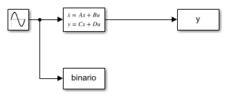